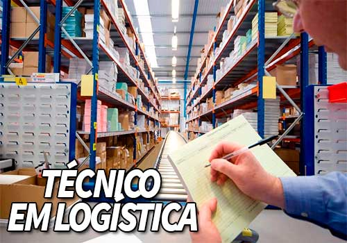

Você sabe o que faz um profissional de Logística?

Essa pessoa é responsável por organizar processos e buscar soluções para um trabalho mais efetivo e de qualidade dentro de uma empresa. O mercado de trabalho para a área de Logística vem crescendo cada vez mais e criando uma grande demanda por profissionais da área. Afinal, eficiência e organização são valores buscados em todos os setores da economia, desde pequenas até grandes empresas. Existem muitos tipos de serviços de Logística e, por isso, as disciplinas de um curso de Logística buscam atender a todas as necessidades da rotina de trabalho desse profissional! Conheça um pouco mais sobre a faculdade de Logística a seguir.
As disciplinas do curso de Logística
O curso de Logística pode ser encontrado em diferentes titulações: técnico, tecnólogo e bacharel. As duas últimas são cursos de nível superior e, por isso, os dois têm o mesmo valor no mercado de trabalho.
A grande diferença está no tempo. O curso Tecnólogo dura de dois a três anos, enquanto o bacharel dura quatro anos, em média. Além disso, o primeiro tende a ser mais prático e voltado ao mercado de trabalho. Para quem quer estudar Logística, há cursos 100% online (a distância), semipresenciais e presenciais, sendo os dois primeiros indicados para quem precisa conciliar estudos, trabalho e, muitas vezes, família. Mesmo com algumas diferenças, ambos os cursos apresentam grade curricular muito semelhante.]